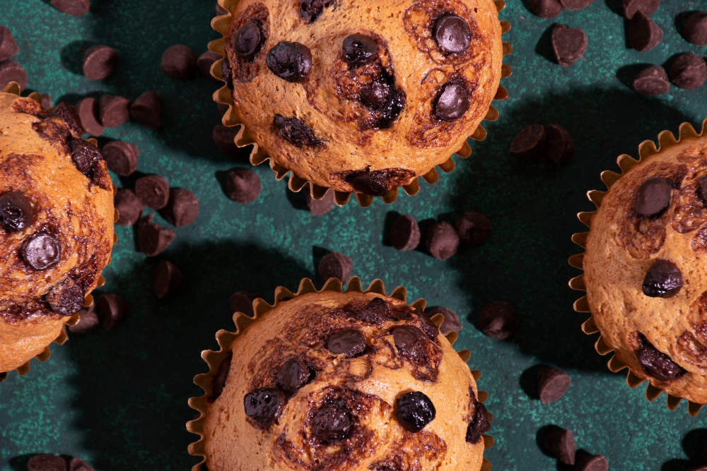

Muffins banane & chocolat

Description
Moelleux, dorés et pleins de douceur, ces muffins banane & chocolat sont un vrai câlin sucré. La banane apporte son moelleux naturel, le chocolat fond dedans comme un petit secret gourmand. Parfaits au déjeuner ou pour une pause douceur, ils se préparent en un clin d'œil et disparaissent tout aussi vite!
Savais-tu que? Cette recette est dans ma famille depuis presque 30 ans!
Ingrédients
- 375 ml (1 1/2 tasse) de farine
- 60 ml (1/4 tasse) sucre, mais pas besoin avec pépites de chocolat
- 10 ml (2 c. à thé) de poudre à pâte
- 3 ml (1/2 c. à thé) de soda à pâte
- Une pincée de sel
- 60 ml (1/4 tasse) huile de mais ou canola
- 2 œufs
- 375 ml (1 1/2 tasse) de bananes mûres en purée
- 5 ml (1 c. à thé) de vanille
- 250 ml (1 tasse) de céréales de son (All-Bran) ou d'avoine pour bébé
- Pépites de chocolat, quantité au goût
- 60 ml (1/4 tasse) de noix non salée comme pacanes ou autres
Étapes